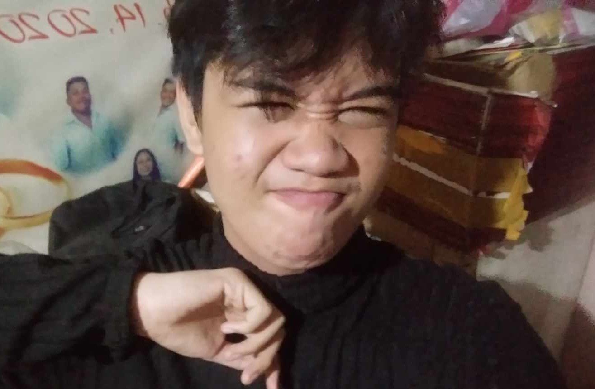
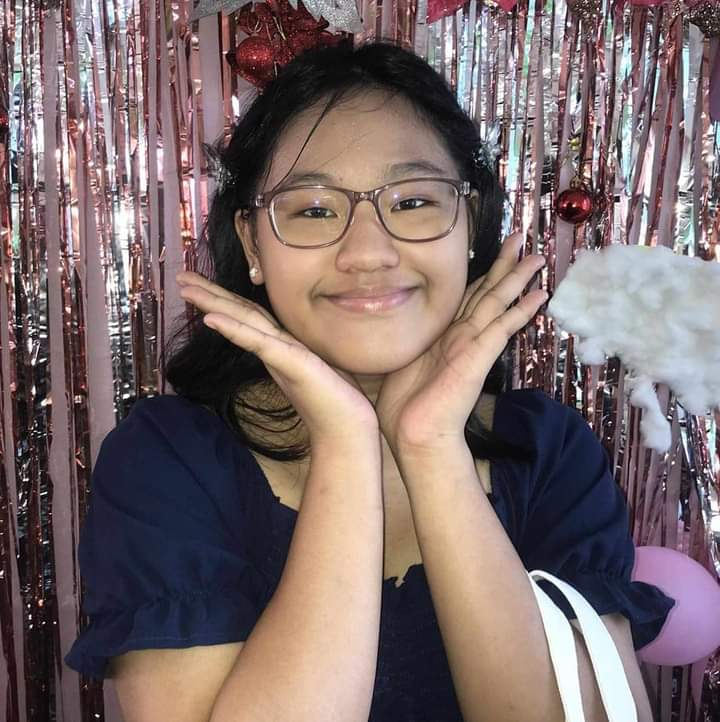

This webpage is designed by Jester Leo E. De Guzman and Ry-nne Rozze G. Abonalla.
These two students under the STEM curriculum are studying at Zamboanga City Highschool Main (ZCHS) located at Don Alfaro St. ,Tetuan,
Zamboanga City, This page is designed to give a brief information or knowledge to readers who wants to know more about Zamboanga City. The creators of this webpage are of good moral and academic standing. They endeavor to promote Zamboanga City to local and foreign tourist.

